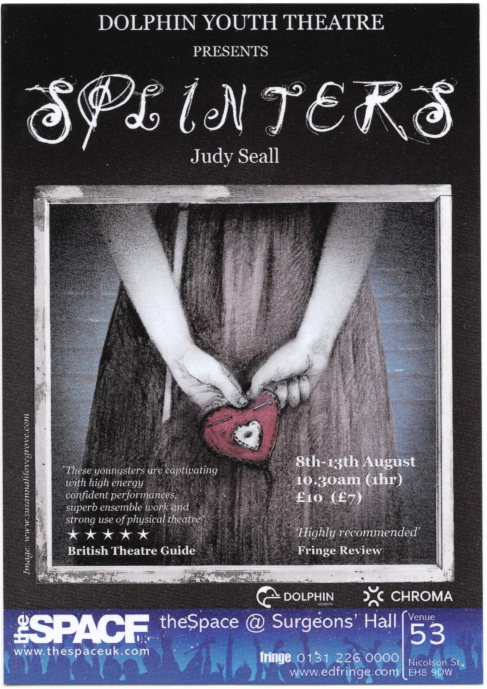

My original score for a five-star play
The scene: it's the early summer of 2022. I've just quit uni and am feeling pretty rubbish about it. I'm struggling with writers block, socialising, and even simply leaving the house. I have no plans whatsoever, and I sort of want it to stay that way. Suddenly, Judy Seall - drama teacher at the Dolphin School and five-star playwright - asks me to help out providing music for a production she wants to take to the Edinburgh Festival Fringe in a few months.
I want very much to say no, and to stay inside my room, but luckily my family persuade me to take the chance and go for it. I was completely terrified of the idea and had no idea what I was doing, and I think that's why it ended up being so much fun.
The Dolphin School is where my brothers went for the majority of their time at primary school- my parents only discovered it after I'd already grown out of KS2. It's small, tucked away down a country road, and really quite nice. There's plenty of emphasis placed on creativity, with great teachers to boot. The drama teacher, Judy Seall, would write original plays for the students to perform instead of the mindless repetition of nativities and what have you. On occasion, she'd pick out a group of particularly promising students and work with them over the spring and early summer, with the aim of staging a production of one of her plays at the Edinburgh Festival Fringe. Both my brothers were picked for what became her first five-star play, Tales From the Tent. I went along to watch them perform, and thought it was amazing. The commitment and acting skills from the young cast, the live music, and the wonderful story all left a strong impression on me, and I managed to in turn make a good musical impression on Judy over the years.
Judy's new play was called Splinters. Refined over several years, it featured the dual stories of the Edwardian-era Coram children - kicked out of their home by an evil step-mother and forced to fend for themselves - and two modern children, descendants of the Corams who are trying to uncover their family history by picking through the ruins of the foundling hospital where their ancestors ended up. My brief was for light accents throughout the Coram story (played melodramatically), and nothing for the modern scenes (played naturalistically). I didn't know what instruments to use, whether the music would be pre-recorded or live, or what the vibe was at all; all in all I felt rather in over my head. I read through the script and started to get some small ideas, but nothing real. I resolved to wait until I had a better read on the atmosphere the show was trying to create, and for that, rehearsals had to start.
...was scary. The cast and director all knew the space and each other well, and I was an interloper- my closest link to the cast was that my younger brother was playing one of the Coram children, but aside from that I didn't know any of them, and was a good five years older than the eldest to boot. As my musical role was semi-separated from their dramatic parts, I figured that this would be fine, although it created some awkwardness.
To open the rehearsals, Judy briefed us on the schedule, the play, and her vision for it, and then we did some drama warmups. This was a weird mix of novelty and nostalgia for me- I was familiar with the games and concepts, but in the past, I was just another student/kid; now, I was a 'grown-up' who was still acting like a kid in the games. I didn't feel nervous in front of the others at all, which never used to be the case.
Once the warmups were done, we moved between developing the characters, discussing the script, and tentatively blocking out some scenes. I stayed off-stage and away from the keyboard for the majority of the time, making notes of ideas on my script as the cast worked through it, and discussing possible cues with Judy. Watching the cast push and pull the timing of the dialogue and action created an interesting problem- the music had to create moods and have recognisable themes, but whatever I wrote would have to be very flexible and responsive to the timing of the cast. This meant that my themes would have to be strong, and the development of them very economical.
It was very hard to form solid themes during rehearsals- there was always noise, and never time for me to sit down and mess around with ideas while the cast waited. I'd try and soak up the energy and huge variety of moods that the cast and director were generating, and improvise alongside them when I felt I had something worthwhile to add. Once captured, I'd try to understand and express the ideas of the day at home in the quiet. A technique I used a few times was to sing lines or directions from the script, or make up my own narration to the proceedings. Taking the improvising away from my fingers freed me from the scale patterns I normally fall into (curse that classical training), and allowed me to be more expressive. It was in this way that I found the main Coram Theme.
As well as writing original material, Judy wanted to use some existing songs- specifically Everybody's Doin' It (Irving Berlin) A Little Bit of Cucumber (T.W. Conner), and Sing A Song of Sixpence (Trad, John Rutter arrangement). Learning these informed the development of my own stuff, giving me guidelines on the ways the music should resolve given the context of the other pieces, and -more excitingly- ways I could break away from that context as the events of the story became more disturbing.
Once I had my themes and existing songs learnt, improvising alongside the cast became much easier. It's pretty crazy how many different ways a melody can be played- altering the rhythm, accidentals, underlying chord progression and expression can pull the same sequence of notes in all manner of directions. What's more, once the audience is familiar with one presentation of the theme, you can use another to create contrast- lightning looks cool without context, but becomes damn powerful when preceeded by oppressive gloom. Pardon the tangeant- what I was trying to say is that once I had the themes, I could bend them to the required mood pretty easily. The repeating melodic thread winding through the different scenes kept the music cohesive, and gave me a strong framework to
It's available on Bandcamp, Spotify, and YouTube.